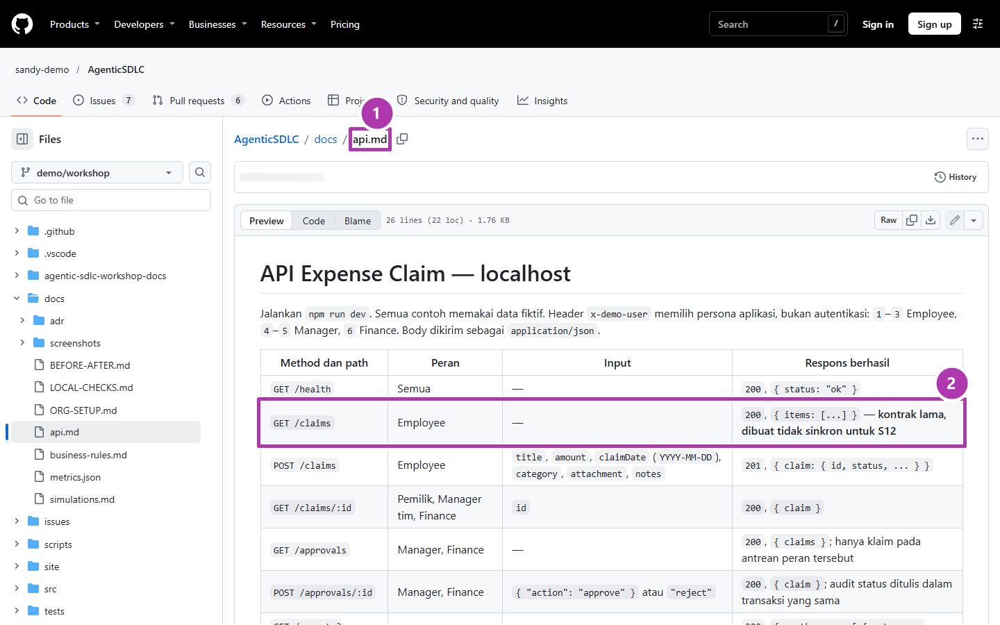
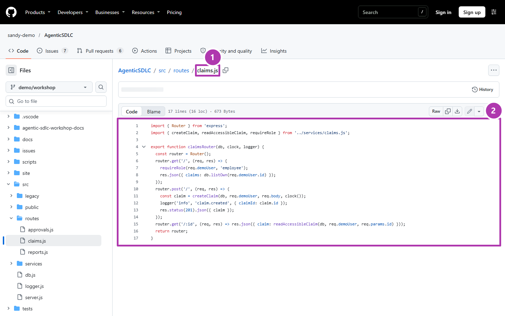
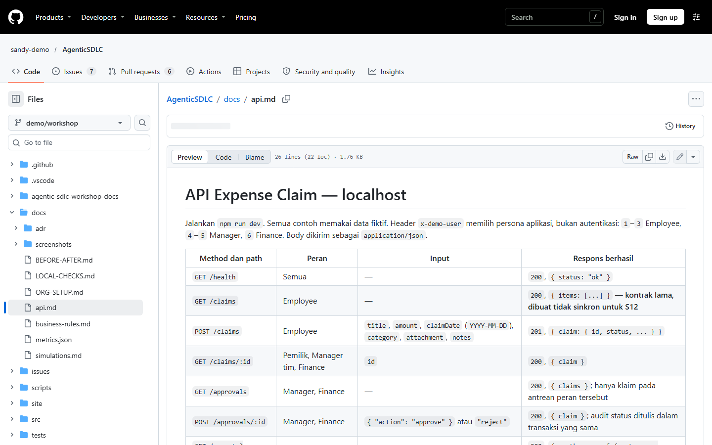
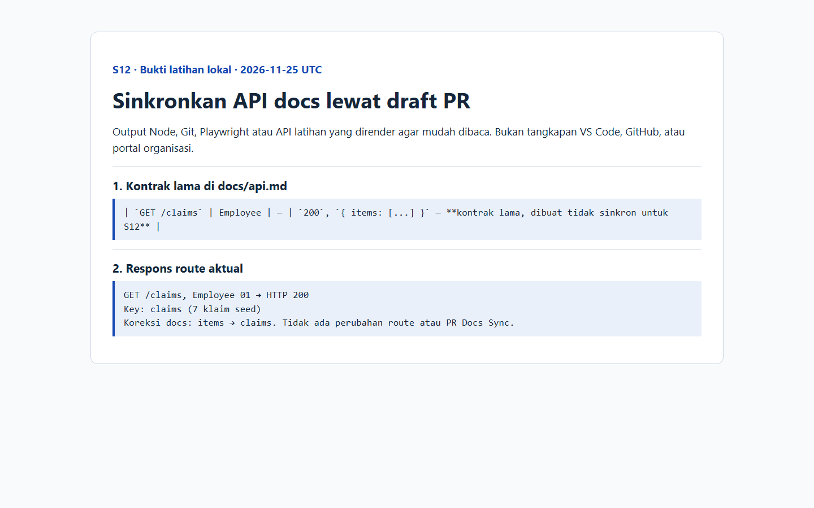

S12 · Level 4 — Continuous AI
Sinkronkan API docs lewat draft PR
Docs Sync membandingkan dokumen terhadap route. Safe output hanya mengizinkan satu draft PR yang mengubah docs/api.md.
Status latihan: Live ditunda · target draft main belum ada di GitHub. Ikuti langkah · Ulangi dari awal.
Masalah yang dihadapi
Docs masih menyebut items, padahal API mengirim claims.
Kerugian: Aplikasi partner membaca struktur yang salah.
Masalah pada baseline
docs/api.md
Lihat potongan atau catatan sumber
Dokumen latihan: { items: [...] } · Route: { claims: [...] }Solusi dan alur
Docs Sync membandingkan dokumen terhadap route. Safe output hanya mengizinkan satu draft PR yang mengubah docs/api.md.

- Push demo/manual → Docs Sync → draft PR docs.
- Issue latihan dibuka → Issue Triage → label atau komentar.
- CI latihan gagal → CI Fault Analysis → satu komentar pada PR pemicu.
Lihat sumber Mermaid
flowchart TB
push["Push demo / manual"] -->|Bandingkan kontrak| docs["Docs Sync"]
issue["Issue latihan dibuka"] -->|Nilai kelengkapan| triage["Issue Triage"]
ci["CI latihan gagal"] -->|Baca log| fault["CI Fault Analysis"]
docs -->|Izinkan draft PR docs| pr["Satu PR"]
triage -->|Izinkan label dan jawaban| label["Issue pemicu"]
fault -->|Izinkan satu komentar| comment["PR pemicu"]
classDef ai fill:#efe6ff,stroke:#7354a4,color:#382459
class docs,triage,fault aiLangkah demo
Bandingkan dokumen dengan respons nyata
GitHub → Code → docs/api.md → Preview. Di baris GET /claims, kontrak lama memakai items. Jalankan aplikasi lokal lalu panggil endpoint untuk membuktikan respons aktual.
npm run demo:before curl.exe -fsS -H "x-demo-user: 1" http://127.0.0.1:3000/claims
Perbesar S12-before-annotated.pngSumber GitHub · 1. Di Code buka docs/api.md, tab Preview. · 2. Baca baris GET /claims, kolom Respons berhasil: key items adalah kontrak lama. Konfirmasi nilai di route, lalu koreksi dokumen
Buka src/routes/claims.js pada branch yang sama. Cari res.json({ claims: ... }). Pada checkout latihan, ganti key items → claims hanya di dokumentasi; jangan sentuh route.
git diff -- docs/api.md
Perbesar S12-actual-route-annotated.pngSumber GitHub · 1. Buka src → routes → claims.js. · 2. Di router.get, cari res.json dengan key claims. Yang berubah pada latihan Docs Sync adalah docs, bukan payload API. Jalankan workflow setelah prasyarat live siap
Pilih Actions → Docs Sync → Run workflow (atau push perubahan latihan ke demo/docs-trigger). Periksa safe output membuat paling banyak satu draft PR yang hanya menyentuh docs/api.md. Jangan merge.
gh workflow view docs-sync.lock.yml -R sandy-demo/AgenticSDLC


Sebelum dan sesudah


Perbesar S12-before.pngS12-after.png| Bagian | Sebelum | Sesudah / target |
|---|---|---|
| Perilaku | docs/api.md menyebut key items. | GET /claims lokal benar-benar mengirim key claims. Target edit hanya dokumen, bukan route. |
| Bukti visual | Ada tangkapan lokal. | Belum direkam. |
| Keputusan | Peserta membaca keadaan awal. | Manusia memeriksa hasil sebelum meneruskan. |
Manfaat
- Tim integrasi memakai kontrak yang sama dengan kode.
Bukti dan sumber
Template issue S12 · Data latihan dan pengukuran.


Perbesar S12-local-result.pngBukti GitHub live
Safe output Docs Sync menunjuk ke main, tetapi repo latihan memakai demo/workshop dan belum memiliki main.
2 layar yang belum direkam
S12-01-run.pngS12-after.png
Ulangi latihan
Berhenti dari terminal server dengan Ctrl+C; jalankan npm run demo:before lagi. Data demo kembali ke seed; tidak ada perubahan ke GitHub.
npm run reset -- --fresh